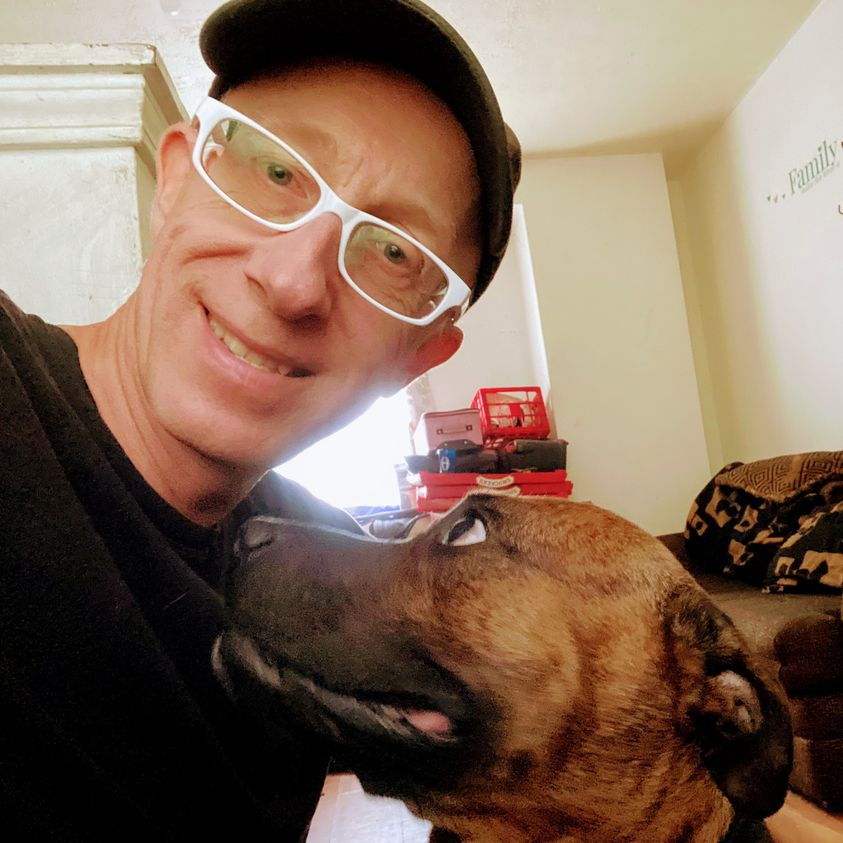

Timeline photos
I would LOVE if my friends would come and hang out with me this Thursday (January 26) from 6pm - 8pm at @[100063454609669:2048:Mercedes' Tavern] 1947 W. Market St. Suite 103. Akron, Ohio (Behind CVS).
There will be food and drinks. If you are low on cash, PLEASE DON'T LET THAT STOP YOU. Just come.
This is a party to celebrate the goodness of Akron. WE THE PEOPLE have the power to turn Akron around and make it a wonderful place for ALL people to live. We already have the diversity. Now we just need the equity, inclusion and justice. That's where I and all the rest of the people of Akron come in.
WE KNOW WHAT IS RIGHT. WE KNOW HOW TO FIX OUR MOST TERRIBLE PROBLEMS. We just need to take the control away from the corprocrats and give it to the people.
PLEASE COME BY. It will be SO fun. There is a cool jukebox and pool table.
(I've initially billed this as a fundraiser for my campaign to win Ward 8 city council. But I really think it is more of a COMMUNITYRAISER. Coming together is the real power in America. WAY more powerful than money.)
EDIT: I forgot to mention that I'm with Ranger in this picture. He lives at our house that houses some of the most challenging homeless people to house.
#sageforakron8